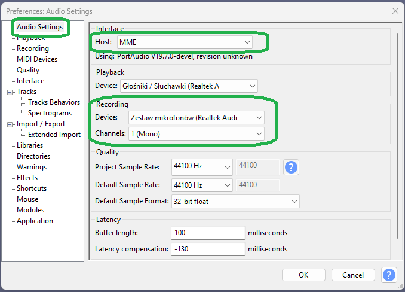
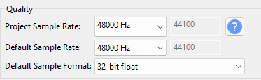
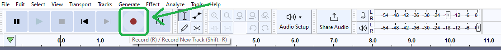
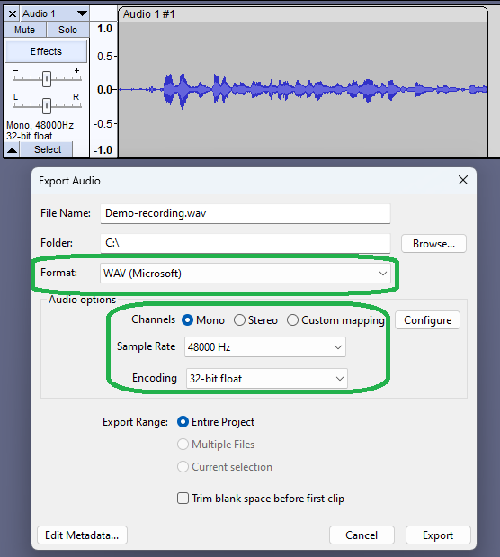

Audio Specifications Summary
- Container Format: Uncompressed WAV (`.wav`)
- Sample Rate: 48,000 Hz (48 kHz)
- Bit Depth: 32-bit float
- Channels: Mono per speaker, aligned side-by-side
- Processing: 100% raw — NO noise reduction, NO gating, NO EQ, NO compression
NOTE: Software Flexibility
While we recommend Audacity for straightforward setup, you are welcome to use any professional Digital Audio Workstation (DAW) of your choice (e.g., Adobe Audition, Reaper, Pro Tools, Logic Pro), provided you adhere strictly to our required audio specifications (48,000 Hz, 32-bit float, mono channel, and 100% raw uncompressed WAV export).
Step 1: The Headphone Rule (Mandatory)
Both participants MUST wear headphones during the web call. If either speaker uses open laptop speakers, their voice will bleed into the other person's microphone and the other speaker's local recording.
Because every submitted file must remain 100% raw (no noise removal, gating, or echo cancellation), any cross-talk captured at the source cannot be repaired later. Use headphones to ensure each Audacity recording contains only the person speaking into that local microphone.
Step 2: Connecting the Mic & Audacity Setup
Open Audacity and select the local external microphone as the recording device. Do not select the web call audio device — you want the physical microphone in the room, not the call loopback. Each track is recorded as a 1 (Mono) Channel because each speaker creates their own local file.
CRITICAL: Set Recording Channels to 1 (Mono) Channel
Because each participant records their own local voice track separately, recording in Mono prevents unnecessary file bloat and channel imbalance.

Set the project rate to 48,000 Hz and the track format to 32-bit float. This ensures the exported WAV meets our exact submission requirements.

Step 3: The Live Call & Local Recording Flow
Both speakers join a web call using Zoom, Google Meet, Cleanfeed, VDO.Ninja, etc., while wearing headphones. This call is only for conversation — neither speaker records from the call. Each speaker records locally in their own Audacity project.

Step 4: The Clap Sync (Crucial for Audio Alignment)
Before the conversation begins, count down together — 3, 2, 1 — and clap simultaneously. Both speakers must record this clap. The clap creates a sharp, easy-to-see spike on each Audacity waveform, allowing the two local tracks to be aligned precisely when they are later placed side-by-side.
Step 5: Exporting & Submission
Before exporting, verify that your export settings match the following parameters:
- Format: WAV (Microsoft)
- Channels: Mono
- Sample Rate: 48000 Hz (48 kHz)
- Encoding: 32-bit float

Once settings are as above — press the Export button and send each speaker’s file through our online form. For any issues please email us at vr@stealthtranslations.com.